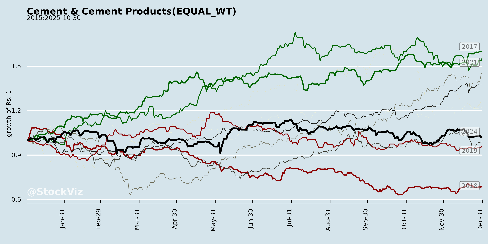
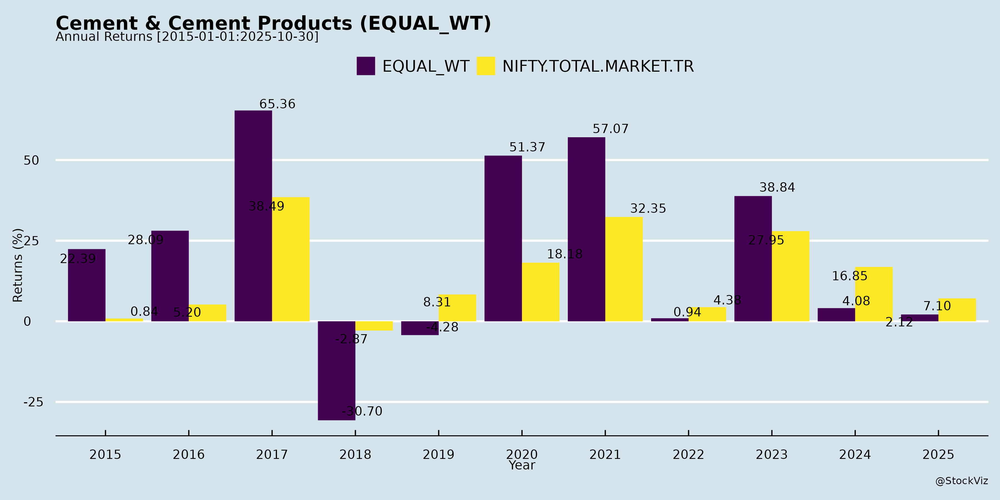
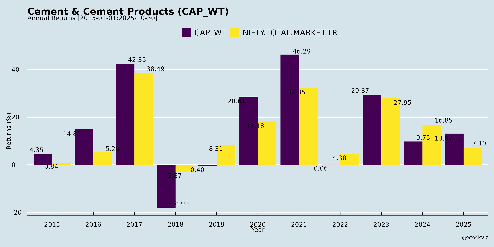
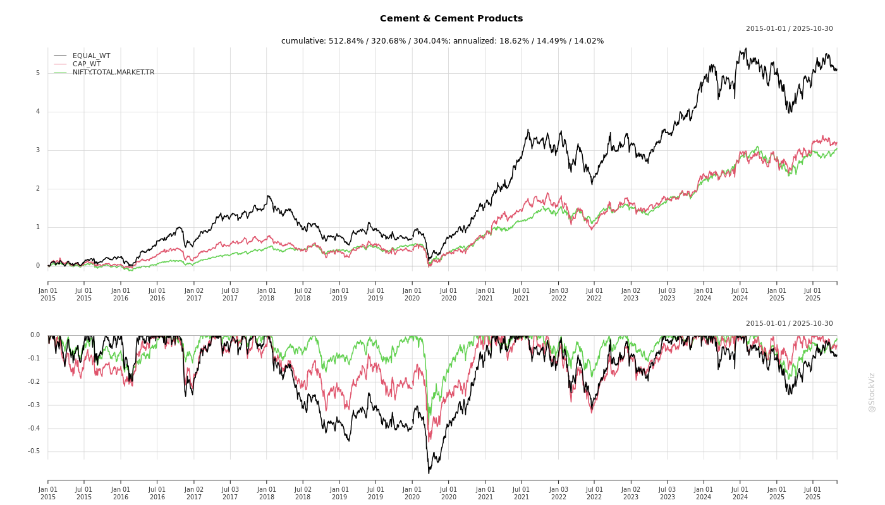
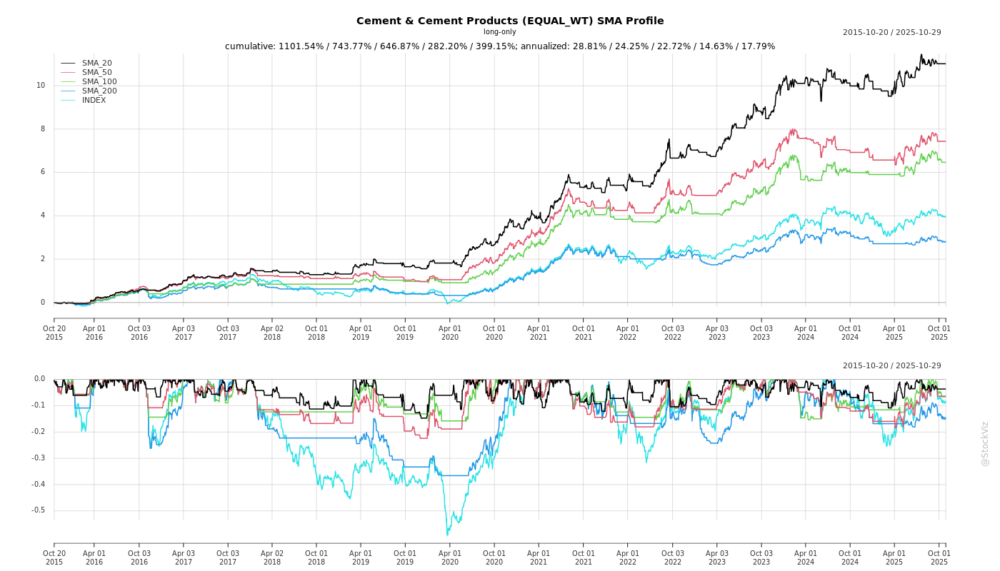
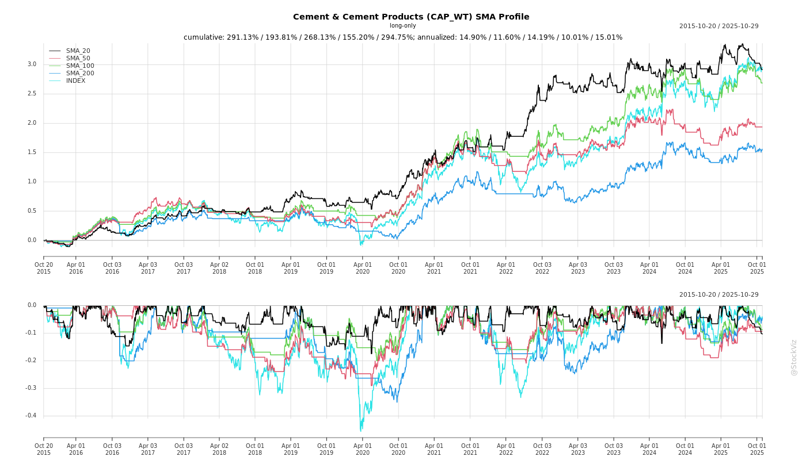
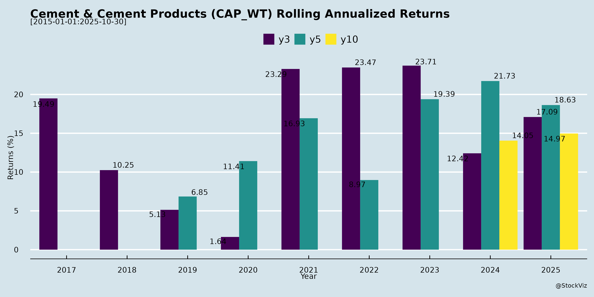

Cement & Cement Products
Industry Metrics
February 20, 2026
Annual Returns




Cumulative Returns and Drawdowns

SMA Scenarios


Current Distance from SMA
Rolling Returns

Market Cap
EBIT (% of Industry Total)
Revenue (% of Industry Total)
AI Summaries
Analyst
asof: 2025-12-03
Analysis of Indian Cement & Cement Products Sector
The provided documents primarily consist of regulatory filings (e.g., investor meet intimations, earnings transcripts, and disclosures under SEBI LODR Reg. 30) from major players like UltraTech Cement, JK Cement, Dalmia Bharat, Grasim/UltraTech group, Ambuja/ACC, Shree Cement, JK Lakshmi Cement, JSW Cement, Nuvoco, India Cements, Ramco Cements, spanning Q2/H1 FY26 (ended Sep 2025). These reveal a sector navigating short-term softness amid aggressive expansions. Below is a structured analysis of headwinds, tailwinds, growth prospects, and key risks, derived from performance highlights, management commentary, and forward guidance.
Headwinds
- Demand Softness in H1 FY26: Q2 volumes grew low-single digits (e.g., JK Cement ~15% YoY but industry ~4.5-5%; Dalmia ~3% YoY; UltraTech consolidated ~7% like-for-like). Attributed to heavy monsoons, flash floods, GST transition destocking, and Bihar elections. Rural/urban pick-up delayed; October subdued due to Diwali/unseasonal rains.
- Pricing Pressure Post-GST Cut: GST reduction (28% to 18%) led to full pass-through (~₹30-40/ton), eroding realizations (e.g., UltraTech -4.3% QoQ; industry non-trade prices down beyond GST benefit). Trade prices stable but non-trade diluted; East/North markets hit hardest.
- Cost Inflation: Fuel costs up (petcoke ~$116-120/ton; blended ~₹1.38/kcal; UltraTech/JK Cement power & fuel +QoQ). Maintenance (e.g., UltraTech 617 kiln days shutdown, ~₹100/ton impact), ads/staff (~₹40/ton), and freight hikes (e.g., JK Lakshmi +8.5% due to non-core market seeding). Raw material +1% YoY (Dalmia).
- Incentive Deferral: GST cut delays state incentives (e.g., Dalmia FY26 accrual ~₹240cr vs. ₹300cr prior; JK Cement ~₹300cr from FY27). Coal cess removal offsets ~₹20-50cr but limited.
- Operational Challenges: Acquired assets ramping (e.g., UltraTech’s India Cements EBITDA/ton ~₹386; Kesoram ~₹755). Receivables up (JK Lakshmi doubled QoQ).
Tailwinds
- GST Boost to Affordability: Enhances liquidity for channel partners/homebuilders; expected rural premiumization (e.g., UltraTech/JK Cement see 13% rural growth; Dalmia notes housing demand uptick).
- Cost Efficiencies: Green power ramp (UltraTech 42%→65%; Dalmia 48%, targeting 576MW RE by FY26; JK Cement 46%). Blending/CC ratio improvements (UltraTech 1.48x→1.6x; JK Lakshmi 1.61x). Logistics optimization (Dalmia lead distance 287km, freight -3.8% YoY).
- Strong H2 Demand Signals: Pent-up demand, good monsoons, RBI ECBs for realty, tax rebates. Rural housing/MSP hikes supportive.
- Brand/Premium Mix Gains: UltraTech/JK Cement premium ~22-26%; rebranding acquired assets (e.g., UltraTech 31-55% conversion).
- Policy Support: Coal cess removal (~₹20-55cr benefit); no UPSI shared in meets signals stable outlook.
Growth Prospects
- Industry Demand CAGR 7-8% (Decade View): Infra-led (roads, rails, ports like Vadhavan ₹76k cr, Sagarmala, Google $15bn data centers, airports). H1 softness expected to reverse in H2 (Dalmia/UltraTech guide 6-7% FY26; rural 10-13%). Volumes: UltraTech ~31mn tons/Q2; JK Cement ~20mn FY26.
- Aggressive Capacity Expansion: | Company | Target Capacity (MTPA) | Timeline/Key Projects | |—————|————————-|—————————————-| | UltraTech | 200+ →240-245 | FY26 exit 200; +22.8 (North/West focus, <₹500cr/ton capex) by FY28-29 | | JK Cement | 30+ | Panna 6mn (Dec’25), Jaisalmer 7mn (Q2 FY28), Bihar/Buxar grinding | | Dalmia Bharat| 75 | Belgaum/Kadapa (12mn West/South), Umrangso 3.6mn clinker (Q3 FY26) | | JK Lakshmi | 30 | Durg brownfield 22.6 (FY28), Nagaur/Kutch/Assam greenfield (FY29-30) | | Others | Shree/JSW/Ambuja | Ongoing brownfield/grinding; investor meets signal confidence |
- EBITDA/Ton Targets: ₹900-1,200 (post efficiencies; UltraTech legacy ₹966; cost savings ₹100-200/ton via RE/blending).
- Diversification: RMC (UltraTech 400+ plants, 4% volumes), paints/white cement (JK Cement ₹400cr FY26), premium products (22-26% mix).
- Funding: Internal accruals/debt (net debt/EBITDA <2x; UltraTech <0.7x post-expansion).
Key Risks
- Oversupply/Competition: 100+mn tons additions by FY28 (North oversupply risk; UltraTech/JK note 90% peak utilizations). Top players (UltraTech 28→33% share) aggressive.
- Execution Delays: Greenfield/brownfield capex (₹3k-15k cr/player); land/mining clearances (e.g., JK Cement Toshali limestone). Debt peak (e.g., JK Cement +₹2k cr net debt).
- Commodity Volatility: Petcoke/coal spikes (geopolitics); forex (USD/INR).
- Regulatory/Monitoring: GST pass-through scrutiny; incentive delays; environmental (e.g., cess changes).
- Macro: Prolonged monsoons/elections delaying H2; EPC cash crunches (non-trade ~38-70% mix).
- Acquired Asset Ramps: Synergies realization (e.g., UltraTech ICL/Kesoram EBITDA ramp to ₹1,000+/ton by FY27).
Summary
Bullish Long-Term (7-8% CAGR): Sector poised for infra/housing-led growth, aided by GST affordability, premiumization, and cost levers (RE, blending). Leaders like UltraTech (33% share target) drive via low-capex expansions (~₹500cr/ton). H1 FY26 softness (rains/GST) masks H2 recovery potential.
Short-Term Cautious (FY26 EBITDA/Ton ~₹900-1,000): Pricing/cost pressures cap margins; Q3 focus on demand revival. Capex intensity (~₹10k cr/year for majors) risks debt, but strong balance sheets mitigate.
Investment Outlook: Differentiated by cost leadership (UltraTech/Dalmia), expansions, and rural/infra exposure. Monitor H2 volumes, petcoke ($116+), and North supply dynamics. Sector resilient but cyclical—favor low-cost producers with 30-33% market share trajectory.
General
asof: 2025-12-03
Indian Cement & Cement Products Sector Analysis
The Indian cement sector, dominated by players like UltraTech Cement (market leader with ~28% share), is poised for structural growth amid infrastructure-led demand, but faces near-term cost pressures and regulatory headwinds. Capacity utilization stands at ~78-85% (FY25), with total industry capacity ~655 MTPA and demand projected to exceed 620 MTPA by FY30 (CAGR ~7-8%). Key players (UltraTech, Shree Cement, JK Cement, JSW Cement, etc.) are aggressively expanding via organic/inorganic routes, with UltraTech targeting 215.9 MTPA by FY27. Financials show resilient EBITDA margins (~18-20% in FY25) despite volatile costs, supported by pricing discipline and cost optimization (e.g., green energy mix rising to 32.7%).
Tailwinds
- Robust Demand Drivers: Infra (31% mix), housing (rural 38%, urban 38%), and industrial segments to drive ~225 MnT rural, 188 MnT infra demand by FY30. Govt. schemes like PMAY, highways, and urban devpt. fuel long-term growth (per capita consumption low at ~225 kg vs. global ~500 kg).
- Capacity Leadership & Consolidation: UltraTech (188.8 MTPA grey cement) leads with 28% national share; acquisitions (e.g., India Cements 14.45 MTPA, Kesoram) and expansions (27.1 MTPA addition FY26-27) enhance scale. Peers like Shree Cement (full commissioning of 6.65 MTPA Rajasthan plant) and JSW/Nuvoco (captive power acquisitions) follow suit.
- Diversification & Premiumization: Shift to RMC (UltraTech: 395 plants, 48.3 Mn m³), white cement, building solutions (4,615 stores), and green products boosts margins (e.g., Birla White, UltraTech Building Products).
- Sustainability Edge: Green power mix at 32.7% (UltraTech FY25, targeting 85% by FY30); ESG ratings (S&P DJSI #8, MSCI 57/100) attract investors. RE100 commitment, net-zero by 2050.
- Financial Resilience: Strong balance sheets (UltraTech net debt/EBITDA 1.16x FY25); healthy ROCE (11.9-17.5%).
Headwinds
- Cost Inflation: Energy costs volatile (fuel mix: petcoke 51%, imported coal 33% FY25); power/logistics ~Rs 1,000-1,200/MT. EBITDA/tonne dipped to Rs 979 (consolidated FY25) from Rs 1,141 (FY24).
- Regulatory & Tax Scrutiny: Frequent GST demands (e.g., Ambuja/ACC: Rs 5-22 Cr penalties; Dalmia: Rs 266 Cr waived). Ongoing litigations could tie up cash.
- Overcapacity Risks: Aggressive expansions (UltraTech +12.4 MTPA FY26) amid moderating demand growth (~6-7% FY25) may pressure realizations (down to Rs 5,517/MT FY25).
- Monsoon/Seasonality: Q3FY25 sales volumes softer (e.g., UltraTech 31.9 MnT vs. 35.1 MnT prior Q4).
Growth Prospects
- Volume & Capacity Ramp: Sector demand CAGR 7-8% to FY30; UltraTech eyes 210+ MTPA grey cement (spread over 82 locations). RMC/green concrete, exports (Luxembourg/Singapore listings), and overseas (UAE white cement) add levers.
- Margin Expansion: Blended realizations stable (~Rs 5,500/MT); cost savings via captive power (1,333 MW + 1,372 MW green), alt fuels (39.3 MnT FY25), and logistics (61% GPS fleet, 275 railheads).
- M&A Pipeline: UltraTech’s inorganic push (e.g., India Cements); peers acquiring captive assets (JSW/Nuvoco: Vadraj Energy for Rs 200 Cr).
- Premium Segments: Building solutions (60% wallet share), white cement (Birla White Middle East entry), and ESG compliance position leaders for 10-15% EBITDA CAGR.
- Outlook: FY26-27 EBITDA/tonne recovery to Rs 1,200+ on infra capex; UltraTech FY25 revenue USD 8.9 Bn, market cap USD 40 Bn.
Key Risks
| Risk Category | Description | Mitigation |
|---|---|---|
| Cost Volatility | Fuel/power/logistics ~70% of costs; petcoke/coal price spikes (e.g., blended fuel up FY25). | Alt fuels (12% YoY rise), green power (85% target FY30), captive sourcing (100% limestone). |
| Regulatory/Tax | GST litigations (e.g., ACC/Ambuja penalties); env. norms (Scope 1 CO2: 545 kg/t target 462 by FY32). | Appeals filed; strong compliance (20+ policies). |
| Demand Cyclicality | Slowdown in housing/infra if monsoons/economy weaken; regional imbalances (South 25% share). | Pan-India footprint (UltraTech 5 zones); diversified end-use. |
| Competition/Overcapacity | 100+ MTPA additions by FY27; pricing wars. | Leadership (UltraTech 3rd global ex-China); 140k partners, digital tools. |
| Execution/Capex | High capex (UltraTech Rs 9,428 Cr FY25); debt rise (net debt 1.33x EBITDA). | Free cash flow positive; ROCE 11.9%. |
| ESG/Climate | Decarbonization costs; water positivity (5.3x FY25). | Net-zero 2050; biodiversity policy. |
Summary: The sector benefits from a multi-year upcycle (infra/housing boom, low per capita base), with leaders like UltraTech driving consolidation and sustainability. Tailwinds outweigh headwinds, projecting 8-10% volume CAGR to FY30, but risks from costs/regulations warrant monitoring. Investors favor scaled players with green credentials (e.g., UltraTech FY25 PAT Rs 6,039 Cr, EPS Rs 205). Near-term: Stable Q3FY26; long-term: Bullish on 700+ MTPA demand by 2030.
Investor
asof: 2025-12-03
Analysis of Indian Cement & Cement Products Sector (Based on Q2/H1 FY26 Filings & Transcripts)
The provided documents (earnings transcripts, investor meet intimations, and regulatory filings from key players like UltraTech, JK Cement, Dalmia Bharat, Grasim/UltraTech affiliates, Shree Cement, Ambuja/ACC, JK Lakshmi, etc.) offer insights into sector dynamics for Q2/H1 FY26 (ended Sep 2025). The sector shows resilience amid short-term softness, with strong structural growth drivers. Below is a structured analysis of headwinds, tailwinds, growth prospects, and key risks, followed by a summary.
Tailwinds (Positive Factors)
- GST Reduction to 18% (from 28%): Fully passed on, boosting end-consumer affordability (₹30-40/ton savings), channel liquidity (10% tax cut eases working capital), and premiumization (aspirational brands now accessible). Coal compensation cess removal saves ₹20-55 Cr/year per company (e.g., UltraTech, Dalmia). Rural housing and individual homebuilding demand surges (13% rural growth cited by UltraTech).
- Demand Green Shoots: Infra mega-projects (Vadhavan Port ₹76k Cr, Google $15B AI hub, Sagarmala, highways/metros/rail/ports/airports) and urban realty (data centers, GCCs). Good monsoon supports rural demand (MSP hikes, tax rebates). H2 FY26 expected stronger (low-single digit Q1/Q2 growth to 6-8% full-year industry).
- Cost Efficiencies: Green energy ramp-up (42-65% mix; e.g., Dalmia 48%, JK Lakshmi 46%). Blended fuel ₹1.38-1.8/kCal (petcoke/coal mix). Logistics optimization (lead distances 287-399 km, DD% 53-60%). Premium share up (22-33%; e.g., JK Cement 26%, UltraTech focus).
- Brand & Portfolio Strength: Premiumization (e.g., UltraTech 13% brand growth), RMC (4% of volumes), non-cement (paints, white cement). UBS stores (21% sales for UltraTech).
Headwinds (Challenges)
- Demand Volatility: Q1/Q2 muted (low-single digits; rains/floods, GST transition destocking). October softness (Diwali, unseasonal rains, Bihar elections).
- Cost Pressures: Power/fuel up QoQ (petcoke $116-120/ton, maintenance shutdowns ₹100/ton hit, WHRS downtime). Freight up 3-8% (seeding new markets, non-core sales). Staff/advertising one-offs (₹15-25/ton).
- Pricing Pressure: Non-trade dilution post-GST (beyond pass-through); trade stable but overall realizations down 4% QoQ in spots (e.g., East/North). Incentives deferred (₹240 Cr FY26 vs. ₹300 Cr prior; ₹60-65/ton run-rate).
- Mix & Utilization: Lower trade share (62% for Dalmia), kiln shutdowns (617 days for UltraTech), acquired assets ramping (ICL ₹386/ton, Kesoram ₹755/ton).
Growth Prospects
- Volume & Capacity: Industry 7-8% CAGR (1.2x GDP; infra-led). Leaders outpacing: UltraTech (31 MnT Q2 sales, 240-245 MT by FY29, +22.8 MT North/West focus); JK Cement (~20 MT FY26); Dalmia (75 MT FY28); others (Shree, Ambuja, JSW) greenfield/brownfield in North/East. Organic share gains (UltraTech 28→32-33%).
- EBITDA/Ton Trajectory: ₹900-1,013/ton in Q2 (e.g., Dalmia ₹1,013, JK Cement ₹902); H2 improvement via costs (₹75-200/ton savings via green energy, blending 1.5-1.6x). Full ramp-up of acquisitions (ICL/Kesoram to ₹1,000+/ton by FY27).
- Strategic Shifts: North/West focus (low capex ₹400-500/ton), premium/non-trade (70:30 mix target), diversification (RMC, paints ₹400 Cr FY26 guidance JK Cement). Investor meets signal confidence.
- Long-Term: 160+ MT additions by FY28; urbanization/infra (roads/rail/aviation) sustains 10%+ rural growth.
Key Risks
| Risk Category | Description | Mitigation/Outlook |
|---|---|---|
| Oversupply | North flooded (UltraTech/JK/Dalmia/Shree/JSW expansions); utilizations 60-90%. Potential pricing wars. | Leaders gaining share; demand-led pricing. |
| Cost Volatility | Fuel (geopolitics, petcoke/coal); forex (USD/INR). | Fuel mix flexibility; green energy (65% target); cess savings. |
| Execution | Greenfield delays (land/mining clearances, e.g., Jaisalmer/Panna); capex overruns (₹3k-15k Cr FY26-30). | Internal accruals/debt <0.7-2x ND/EBITDA; brownfield focus. |
| Demand | Weather/elections; EPC cash crunches delaying infra. | H2 pickup; govt capex. |
| Regulatory | GST monitoring (no hikes short-term); incentive delays. | Compliance; pass-through done. |
| Competition | Aggressive top-2 (UltraTech/Adani); regional pricing. | Premiumization, efficiency (AI/ML, logistics). |
Summary
Bullish Long-Term Outlook Amid Short-Term Muted Recovery: Sector resilient (Q2 EBITDA/ton ₹900-1,000+ despite rains), poised for 7-8% CAGR via infra/housing tailwinds and GST boost. Leaders (UltraTech/Dalmia/JK) expanding aggressively (200-245 MT scale), targeting ₹1,000+/ton via efficiencies/premiums. H2 FY26 key for volume pickup (6-8% industry). Headwinds (costs/pricing) cap near-term margins, but offset by savings. Risks center on North oversupply/execution, balanced by share gains. Recommendation: Accumulate leaders; watch H2 demand/pricing for re-rating. FY26 industry growth ~6-7%; EBITDA/ton stable at ₹900-1,100. (Data as of Nov-Dec 2025 filings.)
Press Release
asof: 2025-11-30
Indian Cement & Cement Products Sector Analysis
Summary Overview:
The Indian cement sector in Q2/H1 FY26 demonstrates resilience amid macroeconomic headwinds like monsoon disruptions, GST rationalization (from 28% to 18%), and regional price corrections (₹3-15/bag declines). Most major players (e.g., UltraTech/Grasim, Shree Cement, Adani/Ambuja-ACC, JSW Cement, Dalmia, Ramco, Nuvoco, JK Lakshmi, Birla Corp.) reported YoY revenue growth (8-17%), EBITDA surges (29-71%), and volume gains (2-15%), driven by premiumization (40-60% trade mix), cost efficiencies, and expansions. Capacity additions aim for 200+ MTPA industry-wide by FY27-28, fueled by infra/housing demand. Sustainability (renewables at 30-48%, low CO2 emissions) and deleveraging (net debt/EBITDA <1x for many) bolster balance sheets. Outlook: 6-8% volume growth in FY26, led by govt. capex, though pricing remains volatile.
Tailwinds (Positive Drivers)
- Strong Financial Performance: Consolidated revenue up 8-17% YoY (e.g., Grasim ₹39,900 Cr, Shree ₹4,303 Cr, Birla Corp ₹2,233 Cr). EBITDA margins expanded (e.g., Dalmia 60% YoY to ₹696 Cr, Birla Corp 71% to ₹332 Cr) via cost controls (fuel/power down 8-20%), premium products (44-60% share), and trade channel focus (71-79%).
- Volume & Premiumization: Sales volumes grew 3-15% (e.g., UltraTech 33.85 MT, Shree 6.8% YoY). Blended/specialty cements at 83-89%, exports/specialty fibers up.
- Capacity Expansions: Aggressive capex (₹461-964 Cr/quarter): UltraTech to 240.8 MTPA (Mar-28), Nuvoco to 35 MTPA (FY27), Ramco to 30 MTPA (Mar-26), JSW to 41.85 MTPA grinding. New units/plants commissioned (e.g., Shree Jaitaran, Dalmia Umrangso).
- Sustainability & Efficiency: Renewables at 24-63% (targets 60-85% by FY28-30), water positivity (8-12x), low CO2 (e.g., JSW 277 kg/ton). TNFD adoption (Adani first in India).
- Policy Support: GST cut boosts demand; infra/housing under Viksit Bharat; healthy monsoons/rural spending expected to aid H2 recovery.
- Diversification: Grasim’s paints (Birla Opus, 24% capacity share), B2B e-com (Birla Pivot ₹8,500 Cr FY27 target), financial services growth.
Headwinds (Challenges)
- Demand & Pricing Pressure: Monsoon weakness, GST-led destocking/channel adjustments caused flat/subdued volumes (e.g., Grasim CSF de-growth 5%, Ramco flat at 4.4 MT). Prices down ₹3-15/bag in central/north/south; realizations stable/soft (e.g., Birla Corp +3%).
- Input & Operational Costs: Raw material hikes (10% YoY, e.g., Ramco limestone tax), power constraints, logistics disruptions (Grasim Vilayat), rupee depreciation, petcoke volatility ($113-130/ton).
- Regional Disparities: Weak east/south demand (supply overhang); competition from imports (Chinese yarn pricing).
- Macro Factors: Subdued non-trade prices post-GST; geopolitical pressures noted by Dalmia.
Growth Prospects
- Demand Revival: 4-6% industry volume growth in H2 FY26 (infra capex, rural housing, 6% FY26 overall). Key markets: North/West (MP/Rajasthan up 7-11%), Bihar (pre-election boost).
- Expansion Pipeline: 20-30 MTPA additions by FY27-28 across players; new regions (East UP/Bihar/Jharkhand via JK Lakshmi/Shree).
- Premium/Blended Shift: 40-60% premium share; green/low-carbon products (85% portfolio for Adani) align with ESG trends.
- Ancillary Revenue: Paints/RMX/e-com (Grasim), construction chemicals (Ramco “Hard Worker” to ₹2,000 Cr).
- EBITDA Leverage: Per-ton EBITDA up 33-56% (₹860-1,138); renewables to cut costs 10-20%.
- M&A/Synergies: UltraTech’s India Cements acquisition (55% stake); Adani Vadraj integration.
Key Risks
- Pricing/Competition: Intense rivalry (price wars post-GST); Chinese imports eroding realizations.
- Cost Volatility: Fuel/raw materials (petcoke/rupee), power availability; levy hikes (e.g., TN MBT ₹160/ton).
- Execution Delays: Capex overruns (e.g., Grasim Phase-1 mid-2027); regulatory approvals (JSW Punjab, JK Lakshmi Assam mines).
- Demand Uncertainty: Monsoon/rural slowdown; infra delays if fiscal pressures rise.
- Regulatory/Environmental: Stricter ESG norms (TNFD/SBTi); GST/tax changes; litigation (e.g., JSW incentives, JK Lakshmi mines).
- Debt & Leverage: Though deleveraging (0.56x for Dalmia), high capex (₹1,200-3,000 Cr FY26) amid rate cuts (repo -100 bps).
- Macro/Geopolitical: Inflation, rupee weakness, global supply chains.
Overall Outlook: Bullish on medium-term (FY26-28) with 6-8% CAGR volumes, supported by ₹10L Cr infra pipeline. Short-term pricing softness, but efficiency/sustainability drives margins. Top players (UltraTech, Adani, Shree) lead consolidation. Investors: Focus on low-debt expanders like Shree/Dalmia.
Copyright © 2023 SAS Data Analytics Pvt. Ltd. All rights reserved.